AI 원리 보기
AI 원리 보기Transformer Explainer
GPT-2가 다음 단어를 확률로 고르는 과정을 층마다 보여 줍니다.
해 볼 것 · 문장을 넣고, 1등 단어의 확률과 온도(temperature)를 바꿔 봅니다.
ROBOT ARM · RACCOONBOT
차시 순서대로 따라갑니다. 차시마다 흐름 · 실습 도구 · 스크래치 코드 · 패들렛 칸이 한곳에 있습니다. 덱 장 번호를 함께 적었습니다. 교안 슬라이드는 위쪽 「교안」에서 엽니다.
AI, 규칙 기반 자동화, 피지컬AI 그리고 로봇팔
규칙을 사람이 적지 않는다면, 판단은 누가 내리는가?
이번 차시 흐름
실습 도구 · 눌러서 엽니다
AI 원리 보기GPT-2가 다음 단어를 확률로 고르는 과정을 층마다 보여 줍니다.
해 볼 것 · 문장을 넣고, 1등 단어의 확률과 온도(temperature)를 바꿔 봅니다.
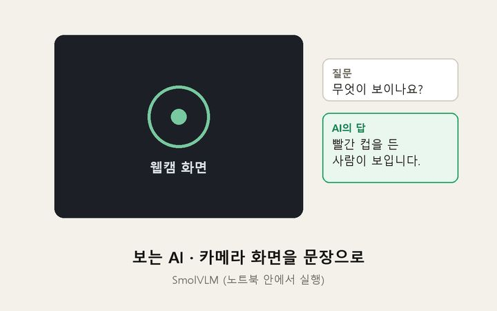
AI 원리 보기노트북 안의 작은 모델이 웹캠 화면을 보고 문장으로 말합니다(보는 AI).
해 볼 것 · 강사 화면으로 봅니다. 물건을 비추면 무엇이라고 말하는지 확인합니다.
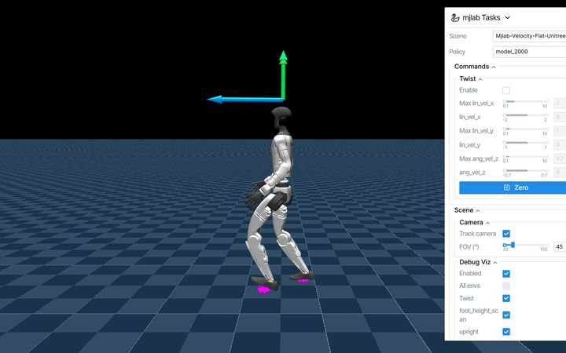
로봇 시뮬레이션실제 판매 로봇(Unitree G1)이 강화학습한 정책으로 걷습니다. 물리 시뮬레이터(MuJoCo)가 브라우저에서 돕니다.
해 볼 것 · 로봇을 마우스로 밀어 넘어뜨리고, 다시 걷게 하고, 다른 로봇으로 바꿔 봅니다.
PC 없이 버튼만으로 로봇 제어
버튼으로 가르친 춤을 다른 로봇에 옮기려면 무엇이 필요할까?
이번 차시 흐름
로봇팔 제어 체험 · 다양한 방식으로 로봇팔 제어하기
손 티칭 · 관절 각도 · XYZ 좌표, 무엇이 다른가?
이번 차시 흐름
실습 도구 · 눌러서 엽니다
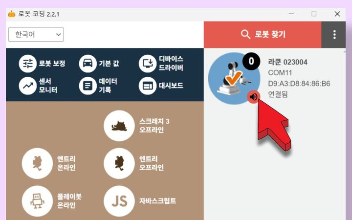
작업 도구라쿤봇을 PC에 연결하고 스크래치 3 오프라인을 여는 프로그램입니다. 6차시 모델 학습(오프라인 TM 영상 분류)도 이 스크래치 안에서 합니다.
해 볼 것 · 햄스터 스쿨 다운로드 맨 아래 「다음 버전 미리 사용하기」에서 2.2.1을 설치합니다. 실행 → 스피커 클릭으로 내 로봇의 「삐」를 듣고, 스크래치 3 오프라인 → 단일 로봇 → 스크래치 3 실행.
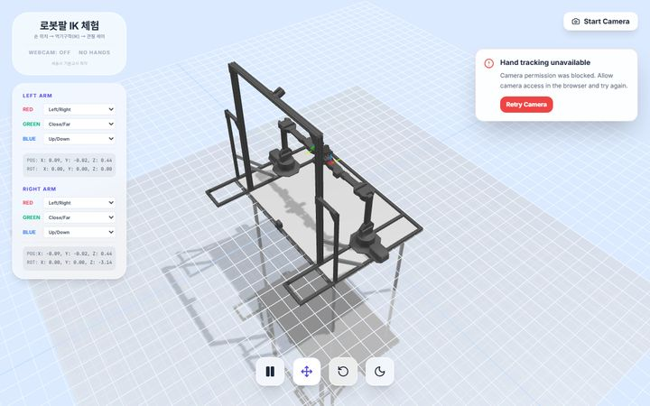
로봇 시뮬레이션웹캠에 두 손을 비추면 시뮬레이션 속 ALOHA 양팔이 따라옵니다. 모방학습용 시범 데이터를 만드는 방식입니다.
해 볼 것 · 「Start Camera」를 누르고 두 손을 움직입니다. 엄지와 검지를 오므리면 집게가 닫힙니다.
 로봇 시뮬레이션
로봇 시뮬레이션실제 로봇 시범 한 편의 카메라 영상과 관절 값 그래프를 함께 재생합니다.
해 볼 것 · 예시 데이터셋을 하나 고르고, 영상이 움직일 때 관절 그래프가 어떻게 변하는지 봅니다.
스크래치 코드 · 열어서 고쳐 씁니다

1번 관절을 속도로 돌리기
「1번째 관절 속도를 50 %로 정하기」 → 2초 → 기본 자세. 50을 −50, 100으로 바꿔 다시. 속도는 −100 ~ 100
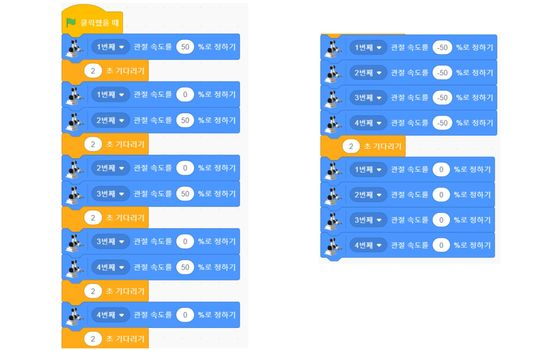
(선택) 1~4번 관절 차례로 돌리기
관절마다 속도 50 → 2초 → 속도 0. 끝에 네 관절 모두 −50 → 2초 → 0. 0 %로 정해야 멈춥니다
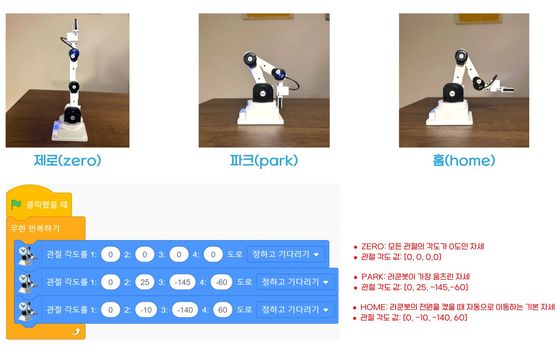
제로 · 파크 · 홈 자세 만들기
관절 각도 블록 3개. 제로 0 · 0 · 0 · 0 / 파크 0 · 25 · −145 · −60 / 홈 0 · −10 · −140 · 60
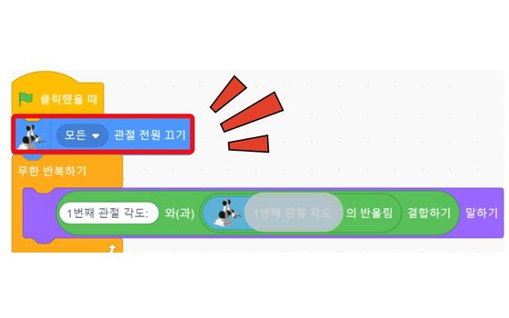
(선택) 관절 전원을 끄고 손으로 돌리며 각도 읽기
깃발 = 모든 관절 전원 끄기. 1번 관절을 손으로 천천히 돌리며 고양이가 말하는 각도를 읽습니다

네 관절을 한 번에, 내 자세 세 개
1:45 · 2:0 · 3:−90 · 4:0 한 번에 실행. 손으로 잡은 자세 셋을 「삐」로 잇고 기본 자세 → 「잘 했어요」
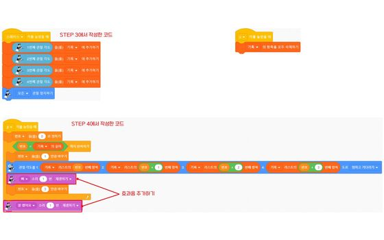
손 티칭을 코드로 · P로 재생, C로 지우기
P = 기록을 네 칸씩 읽어 자세 재생(자세마다 「삐」, 끝에 「잘 했어요」). C = 기록 모두 삭제
제어 방식 비교 미션
같은 원기둥을 세 가지 방식으로 옮기면 무엇이 다른가?
이번 차시 흐름
실습 도구 · 눌러서 엽니다
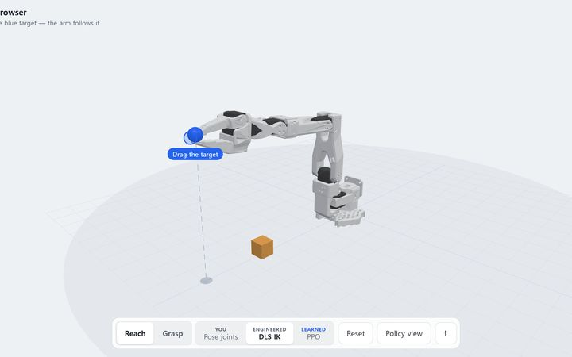
로봇 시뮬레이션같은 로봇팔을 직접(사람) · 공식(역기구학) · 학습(강화학습) 세 가지 머리로 움직여 비교합니다.
해 볼 것 · 파란 목표를 끌고 YOU · ENGINEERED · LEARNED를 바꿔 가며 같은 자리를 다섯 번 비교합니다.
스크래치 코드 · 열어서 고쳐 씁니다

그리퍼 기준으로 가고 좌표표 만들기
깃발 = 세 지점 차례로. 기준을 손목으로 바꿔 비교하고 검사대 · A · B 좌표를 팀 좌표표에. 수평으로 가기 전에 z부터

① 손 티칭 · 기록한 자세로 원기둥 옮기기
팔 옮기고 스페이스 · ← 집기 · → 놓기. O로 기본 자세, P로 재생, 실패하면 C로 지우고 다시 기록

③ XYZ 좌표 · 「집기」 「놓기」 블록
나만의 블록 「집기」 「놓기」(입력값 X · Y · Z): 위로 → 내려가 잡고 → 다시 위로. 5차시 미션 ③(순서 카드대로)의 시작 코드

(선택) 그리퍼를 수평으로 고정하고 움직이기
깃발 → 팔이 움직이는 동안 그리퍼 보기. 관절 4 속도를 30으로 바꿔 다시. 고정하면 관절 4는 마음대로 안 됩니다

키보드로 조종 · 판단은 사람이
숫자 키(1~4) + W = 속도 40, + S = −40. ↑ 놓기(열기) · ↓ 집기(닫기). 원기둥을 A로 옮기고 시간 기록
연속동작 설계 및 실행
자세를 이어 붙이면 자동화가 될까?
이번 차시 흐름
스크래치 코드 · 열어서 고쳐 씁니다
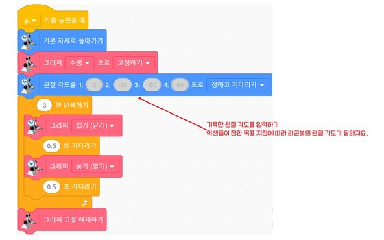
한 자리에서 집기 · 놓기 반복하기
c 키 → 손으로 그리퍼를 목표 지점에 → 관절 각도 4개 적기 → p 키. 코드에 각도를 넣고 실행, 수직 고정으로 바꿔 다시
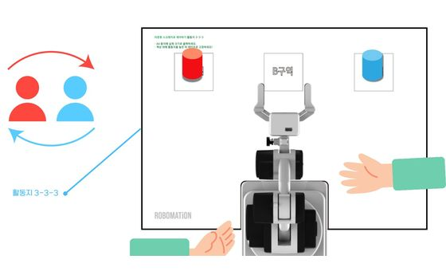
두 원기둥 자리 바꾸기
A · C 구역에 원기둥, B는 비우기. A → B, C → A, B → C 순서로, 옮길 때마다 각도를 적어 코드로
로봇 제어를 위한 신경망 학습
우리 모델은 무엇을 보고 배웠나?
이번 차시 흐름
실습 도구 · 눌러서 엽니다
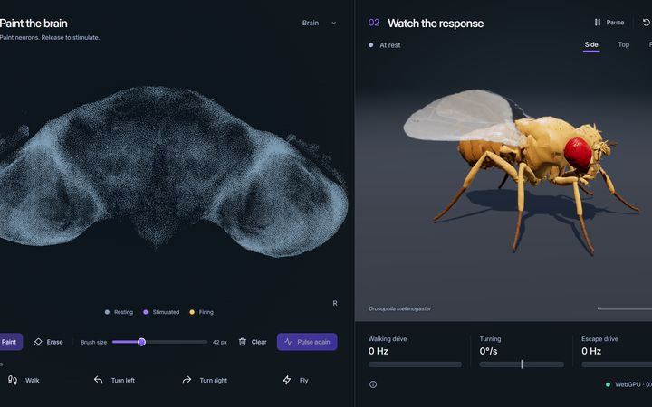
AI 원리 보기실제 초파리 뇌 연결망으로 몸을 움직입니다. 뉴런이 신호를 넘겨 행동이 나오는 모습을 봅니다.
해 볼 것 · Walk 버튼 없이 뇌의 한 자리를 칠해 파리를 걷게 해 봅니다.
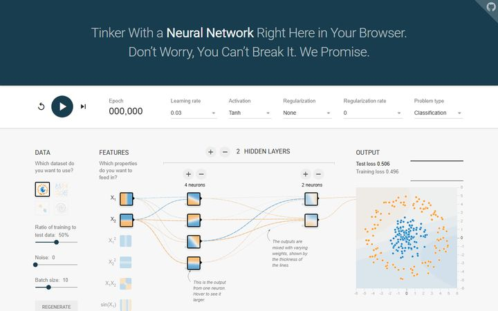
AI 원리 보기학습률 · 은닉층 · 잡음을 바꾸며 가중치가 고쳐지는 모습을 봅니다.
해 볼 것 · ▶을 누르고 은닉층 뉴런 수와 학습률을 바꿔, 손실 곡선이 어떻게 달라지는지 비교합니다.
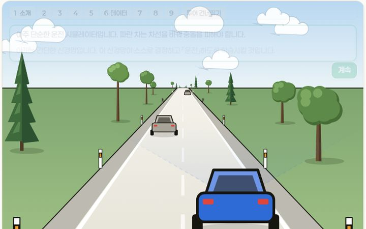
직접 학습같은 신경망을 문제 카드(지도) · 따라 하기(모방) · 시행착오(강화)로 학습시키고, 처음 보는 도로 500m로 시험합니다.
해 볼 것 · 안내 투어를 따라 카드 8장에 답을 붙여 학습시키고, 다른 두 방법과 결과를 비교합니다.
스크래치 확장 기능의 학습 창에서 웹캠으로 정상 · 불량 · 없음을 찍어 내 분류 모델을 학습시키고, 그 모델로 라쿤봇을 움직입니다.
해 볼 것 · 확장 기능 → 인공지능 → 오프라인 TM 영상 분류. 클래스마다 20장 이상 찍고 기본값(에폭 50 · 배치 16 · 학습률 0.001)으로 학습한 뒤 「결과 확인」 → 「모델 적용하기」 · 「모델 저장하기」.
 직접 학습
직접 학습웹캠으로 정상 · 불량 · 없음 사진을 모아 웹에서 이미지 분류 모델을 학습시킵니다.
해 볼 것 · 클래스 셋에 웹캠으로 20장씩 찍어 [모델 학습시키기]를 누르고, 같은 시험용 블록으로 스크래치 모델과 비교합니다.
스크래치 코드 · 열어서 고쳐 씁니다

(선택) 손을 펴면 놓고, 쥐면 집기
미리 학습된 손 찾기. 카메라 고르고 깃발 → 손을 펴면 집게가 열리고, 주먹을 쥐면 닫힙니다. 기준값 50을 바꿔 다시
학습 조건 변화에 따른 제어 비교
학습 정확도 100%면 실제도 100%일까?
이번 차시 흐름
실습 도구 · 눌러서 엽니다
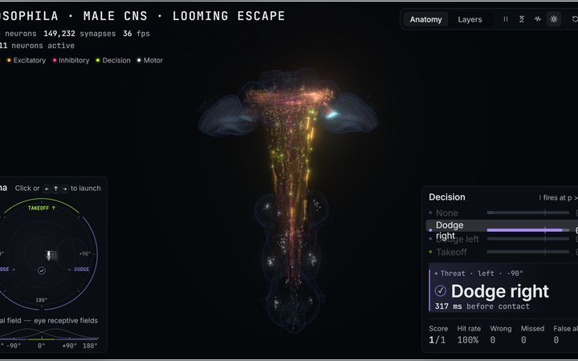
AI 원리 보기뇌도 임계값으로 피할지 말지 정합니다. 잡음을 켜면 헛반응과 놓침이 생깁니다.
해 볼 것 · 임계값과 잡음을 바꿔 헛반응 · 놓침이 어떻게 바뀌는지 보고, 신뢰도 기준값과 연결합니다.
6·7차시에 학습한 모델로 품질검사 로봇을 움직이고, 수업에 옮길 설계까지 나눕니다
로봇이 불량을 A로 보냈다면, 누구의 판단이었을까?
이번 차시 흐름
실습 도구 · 눌러서 엽니다
스크래치 확장 기능의 학습 창에서 웹캠으로 정상 · 불량 · 없음을 찍어 내 분류 모델을 학습시키고, 그 모델로 라쿤봇을 움직입니다.
해 볼 것 · 확장 기능 → 인공지능 → 오프라인 TM 영상 분류. 클래스마다 20장 이상 찍고 기본값(에폭 50 · 배치 16 · 학습률 0.001)으로 학습한 뒤 「결과 확인」 → 「모델 적용하기」 · 「모델 저장하기」.
스크래치 코드 · 열어서 고쳐 씁니다
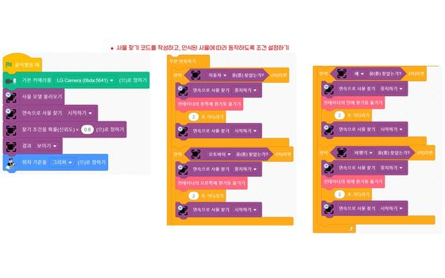
(확장) 색깔 찾기로 같은 선별 미션
확장 기능 → 인공지능 → 색깔 찾기. 빨강 · 노랑은 A, 파랑 · 초록은 B. 우리 「불량」도 찾을 수 있는지 봅니다